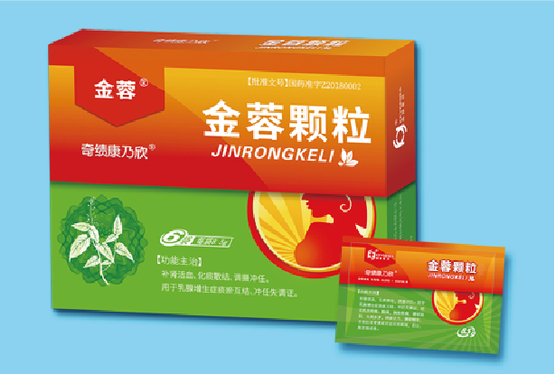

治疗乳腺增生的原创中药创新药金蓉颗粒获批上市
2019-01-25 17:28
近日，广州奇绩医药科技有限公司迎来重大喜讯，我公司中药创新药金蓉颗粒（原名消癖颗粒，下同）获得国家药品监督管理局批准上市，该品种系第一个由研发机构作为持有人进行委托生产的中药品种。
金蓉颗粒是我公司与广东省中医院、广东华南新药创制中心、湖南中医药大学孜孜不倦坚持数十年潜心研发的一类创新中药。2003年金蓉颗粒（原名消癖颗粒）完成临床前研究，2005年金蓉颗粒获批开展临床研究，2012年完成了II、III期临床试验，多中心、分层区组随机、双盲双模拟、平行对照的III期临床试验研究结果显示：金蓉颗粒对乳腺增生病的整体治疗作用明显优于对照组，在治疗乳房疼痛、触痛、乳腺质地、中医症候疗效等方面，金蓉颗粒优势明显，具有良好的临床疗效和安全性。
2014年在香港大学李嘉诚医学院进一步开展消癖颗粒抗肿瘤动物实验，结果显示：消癖颗粒能够显著抑制大鼠乳腺癌的发生，并能显著抑制大鼠乳腺癌肺转移。消癖颗粒预防乳腺癌机制研究方面，从中医药治未病理论出发，依托网络药理学、转基因动物、蛋白芯片等先进技术证明了消癖颗粒对乳腺癌早期发生及晚期转移的预防作用，鉴定了其关键通路TAMs/CXCL-1，多层次，多途径，多靶点验证了中医药调整微环境防治肿瘤的学术理论，揭示了消癖颗粒的作用机制。
目前，金蓉颗粒预防乳腺癌的多中心临床研究正在进行中。
2018年9月11日，“基于治未病思想的消癖颗粒防治乳腺增生病及乳腺癌的新药开发”获得工业和信息化部科学技术成果登记（编号：3392018Y0150）。来自于北京大学、华南理工大学、中山大学、军事医学研究院、广州医科大学以及广东药科大学的专家组鉴定认为：“消癖颗粒”疗效确切，达到国内中药行业领先水平。
金蓉颗粒能够获批上市，受益于国家制度的创新！研发期间得到了国家药品监督管理局和广东省药品监督管理局的大力支持、指导和帮助！2016年国家药监局为药品上市许可持有人（MAH）制度制定若干政策，广东省药监局又为MAH制度实施制定发布若干执行细则，促进MAH制度在广东省的顺利落地实施。